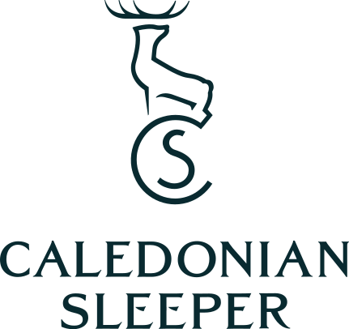
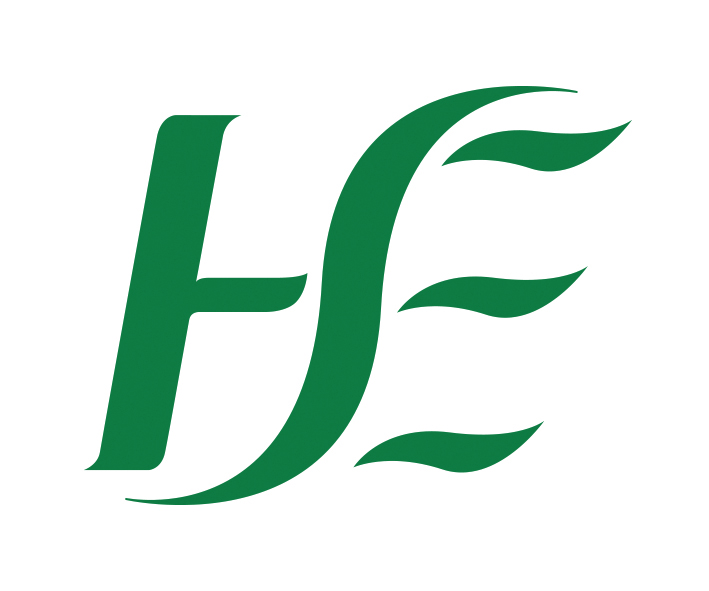

Customer Stories
From national health systems to overnight rail operators, see how organisations use Pronto to manage compliant, high-volume communications across SMS, email, WhatsApp and voice.
Ireland's national postal service wanted to add WhatsApp as a customer engagement channel. Tried to build it internally; too complex. Kaptea, introduced via Twilio and backed by a Meta-sponsored proof of concept, delivered a high-standard MVP that became a production solution.
Ireland's TV licensing authority needed governance, Irish data residency and full GDPR compliance for high-volume licence renewal campaigns: a platform their team could operate without engineering support.

Scotland's iconic overnight rail service runs reservation-only, giving them contact details for 91% of passengers. When disruptions hit in the night, Pronto lets them reach everyone at the push of a button.
A globally regulated online trading platform had a compliance gap: call recordings were not consistently matched to HubSpot records. Kaptea replaced CloudTalk and HubSpot Voice with a single Twilio Flex deployment.
Ireland's electronic tolling operator runs 1M+ email campaigns with a 99% sender reputation and zero dependency on IT or engineering to build and deploy.

Ireland's Health Service Executive uses Pronto to deliver appointment notifications, public health alerts and care pathway communications, with strict GDPR and clinical governance requirements met from day one.
One of the UK's largest housebuilders uses Pronto to manage customer communications from reservation through to legal completion: milestone updates, appointment reminders and after-care messaging at national scale.
Ireland's leading food surplus charity connects retailers with local community organisations. Pronto handles the real-time notifications that keep hundreds of food redistribution partners informed and operational across Ireland and the UK.
The global restaurant reservation platform has worked with Kaptea for over five years: a 10/10 NPS relationship built on consistent delivery, deep product knowledge, and a team that does what they say they'll do.
The leading expert network uses Pronto to coordinate session bookings, expert availability notifications and client briefing reminders across a global network of thousands of specialists in over 40 countries.
The Hot Box Sauna was losing over half of all inbound calls before Kaptea rebuilt their voice infrastructure. Now abandonment is under 7%, with Zendesk and Shopify integrations built in.
The responsiveness and the time to respond and fix an issue is always really, really quick. That's really important for us because we are a nighttime operation.
Pronto gave us a platform we could take into a procurement process with confidence. It met our data residency and GDPR requirements from day one.
Kaptea's Pronto has revolutionised our approach to email campaigns. The platform's ease of use, coupled with advanced analytics and robust security, has elevated our communication strategy.
Kaptea took on a complex brief and built exactly what we needed. Our compliance team now has confidence that every call is being recorded and stored correctly.
See how Pronto handles your specific compliance, channel and governance requirements in a personalised demo.